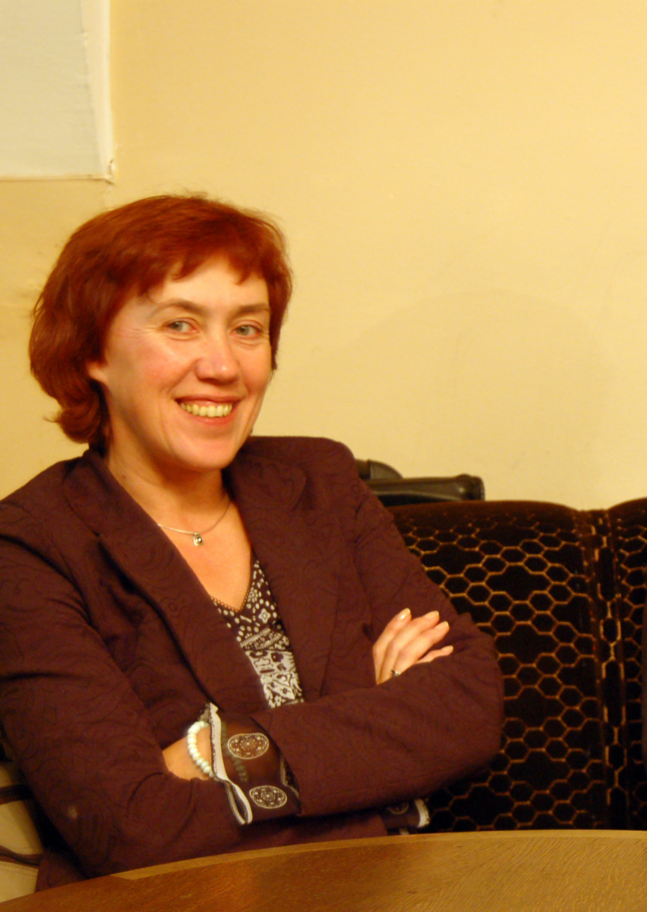

After a prolonged fight with cancer, a long-standing member of our Editorial Board, Professor Audronė Glosienė, died on the 25th January, 2009. She had only recently celebrated her 50th birthday.
Audronė was well known to the international community of library and information science for her enthusiasm and competence is several fields, her leading role in several important European projects, her active participation in international conferences, and as a member of several international bodies.
For most of her life Audronė worked at the Faculty of Communication at Vilnius University and was among those who helped to establish the Faculty. She is remembered as an inspired teacher, always finding talents among her students and stimulating their professional awareness and imagination by instigating acutely sensitive professional discussions and involving students in research work. As a researcher Audronė was involved in several areas: library history, library promotion, the social functions of public libraries and the development of information and communication sciences. She served as a member of various national bodies and influenced significantly national library policy in Lithuania and actual development. She published four monographs and a number of research papers.
Quite recently, she made a major career move and was appointed Director General of the famous Vilnius University Library. The organizational change that she brought to the library was remarkable and will be continued by her colleagues. It was immediately visible in the library documents, e.g., the library report for 2006. Participants in the ISIC Conference in 2008 will remember their visit to the library and the enthusiasm of its staff.
She has left her colleagues, friends, and her family too soon and the sense of loss is deeply felt by her foreign friends.
[Photograph by Vladas Braziunas]